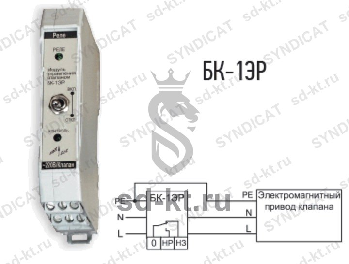

Блоки контроля и индикаторы состояния клапанов СЕНС
Научно-производственное предприятие "Сенсор"
Раздел: Уровнемеры и датчики уровня топлива · АЗС
Цена и наличие — по запросу. Поставляем оригинал и аналоги. Доставка по России.
Описание
Блоки контроля и индикаторы состояния клапанов СЕНС производства Научно-производственное предприятие "Сенсор" — позиция из раздела «Уровнемеры и датчики уровня топлива» для АЗС. Компания SYNDICAT поставляет оборудование и комплектующие для автозаправочных и газозаправочных станций по всей России. Цена и наличие «Блоки контроля и индикаторы состояния клапанов СЕНС» — по запросу: оставьте заявку или позвоните, подберём оригинал или аналог и рассчитаем доставку.